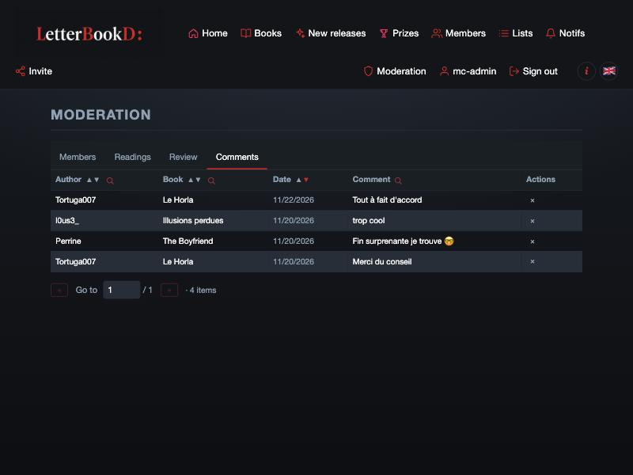

Moderation — CommentsAdmin only
Why it exists: Moderate the nested discussions under reviews. An inappropriate comment is removed here, surgically, without affecting the parent review or the other replies in the thread.

Walkthrough
The table has these columns: Author (commenter's username), Book (the book whose review carries the comment), Date, Comment (excerpt, sortable and filterable), and Actions (cross to delete).
Deleting a comment is atomic: the other comments in the same thread are kept.
Action chains
Each row describes a trigger in the UI, the modal or form it opens, and the resulting effect.
| Trigger | Modal / Fields | Effect |
|---|---|---|
| Sort / filter icons (magnifier on the Comment column) | — | Same behaviour. |
| Cross (×) button on a row | Confirmation POST form. | Deletes the comment. The thread stays consistent (no cascade), and the parent review is not affected. |